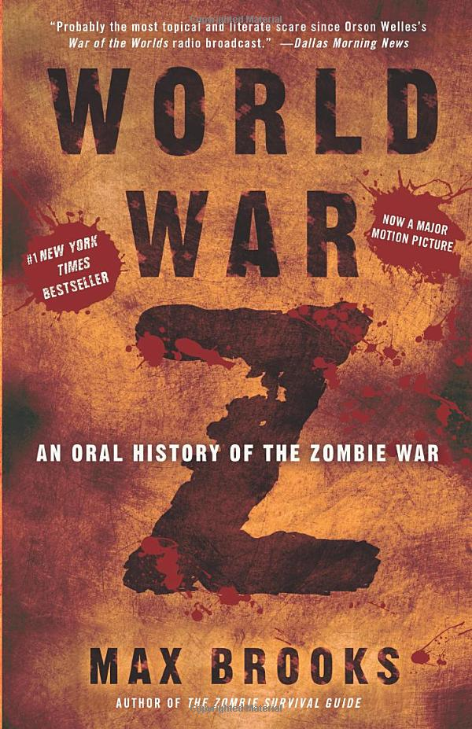
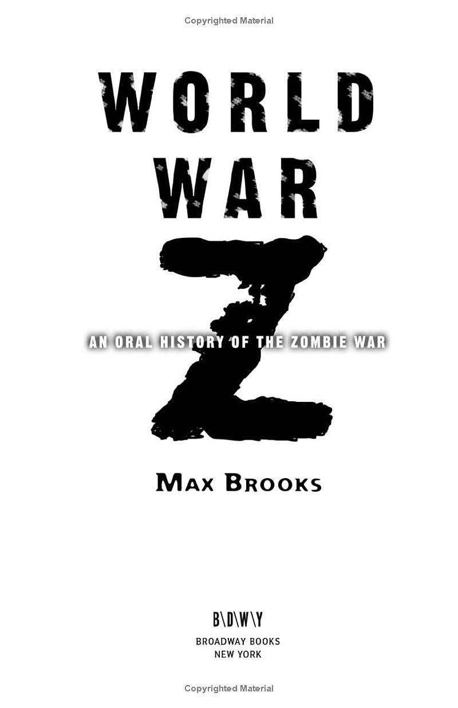
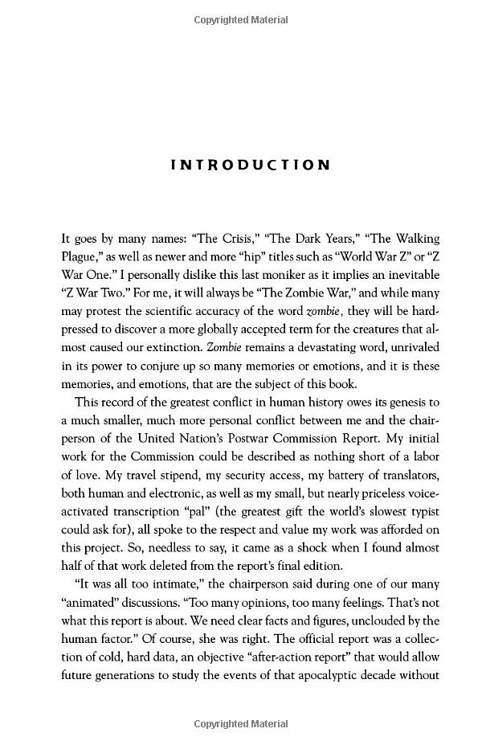
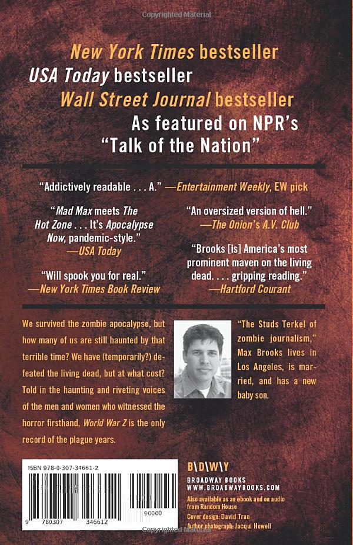

World War Z: An Oral History of the Zombie War
We survived the zombie apocalypse, but how many of us are still haunted by that terrible time? We
have (temporarily?) defeated the living dead, but at what cost? Told in the haunting and riveting
voices of the men and women who witnessed the horror firsthand, World War Z is the only record of
the pandemic.
The Zombie War came unthinkably close to eradicating humanity. Max Brooks, driven by the urgency of preserving the acid-etched first-hand experiences of the survivors, traveled across the United States of America and throughout the world, from decimated cities that once teemed with upwards of thirty million souls to the most remote and inhospitable areas of the planet. He recorded the testimony of men, women, and sometimes children who came face-to-face with the living, or at least the undead, hell of that dreadful time. World War Z is the result. Never before have we had access to a document that so powerfully conveys the depth of fear and horror, and also the ineradicable spirit of resistance, that gripped human society through the plague years.
The Zombie War came unthinkably close to eradicating humanity. Max Brooks, driven by the urgency of preserving the acid-etched first-hand experiences of the survivors, traveled across the United States of America and throughout the world, from decimated cities that once teemed with upwards of thirty million souls to the most remote and inhospitable areas of the planet. He recorded the testimony of men, women, and sometimes children who came face-to-face with the living, or at least the undead, hell of that dreadful time. World War Z is the result. Never before have we had access to a document that so powerfully conveys the depth of fear and horror, and also the ineradicable spirit of resistance, that gripped human society through the plague years.